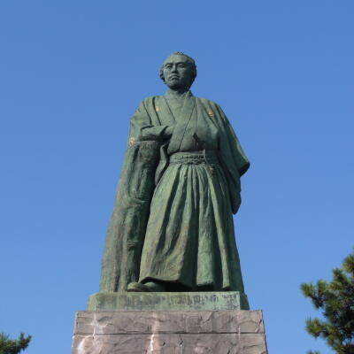
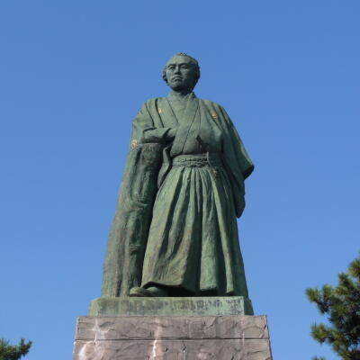
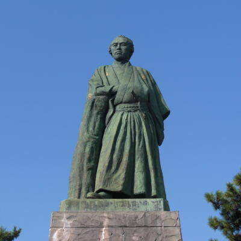
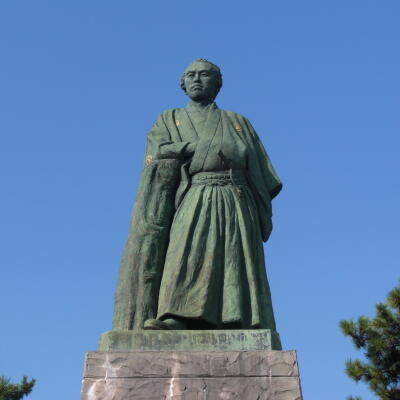
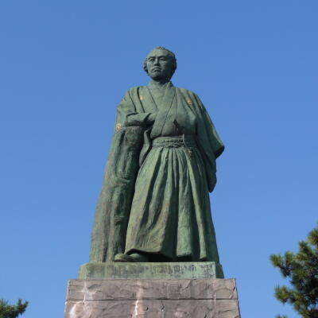

坂本龍馬の紹介  プロフィール 江戸時代末期の志士、土佐藩郷士。諱は直陰（なおかげ）、のちに直柔（なおなり）。通称は龍馬。 他に才谷 梅太郎などの変名がある。土佐郷士株を持つ裕福な商家に生まれ、脱藩した後は志士として活動し、貿易会社と政治組織を兼ねた亀山社中（後の海援隊）を結成した。薩長同盟の斡旋、大政奉還の成立に尽力するなど倒幕および明治維新に影響を与えるなど、重要な働きをした。大政奉還成立の1ヶ月後に近江屋事件で暗殺された。1891年（明治24年）4月8日、正四位を追贈される。 彼から、クリエイターを目指す君へのメッセージ 「そのことは我が胸に成算がある。やろうと思えば、世に出来ぬことはない。」 「業なかばで倒れてもよい。そのときは、目標の方角にむかい、その姿勢で倒れよ。」 「人の世に、道は一つということはない。道は百も千も万もある。」 「世の中の人は何とも言わば言え、我がなすことは我のみぞ知る。」 「人間というものは、いかなる場合でも、好きな道、得手の道を捨ててはならない。」 「英雄とは、自分だけの道を歩く奴のことだ。」
 



 
